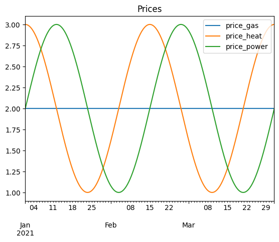
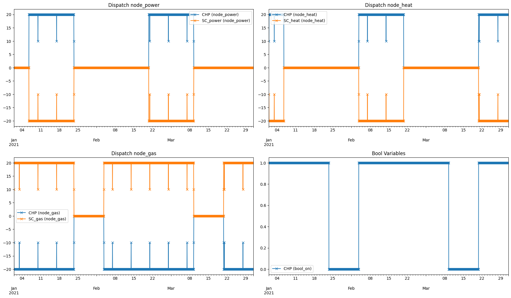
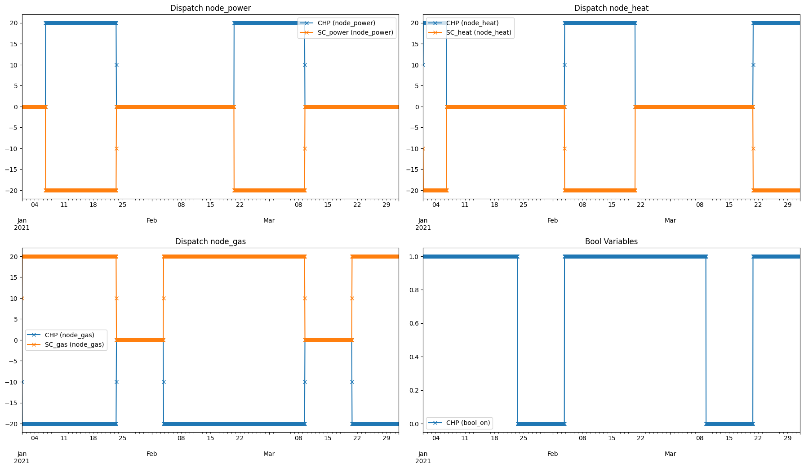

Split Optimization
[1]:
import pandas as pd
import numpy as np
import matplotlib.pyplot as plt
import datetime as dt
import eaopack as eao
[2]:
def plot_results(portfolio, op, res, prices, num_imgs_per_row=2):
out = eao.io.extract_output(portfolio, op, res, prices)
num_nodes = len(portfolio.nodes)
num_img_rows=int(np.ceil((num_nodes+2)/num_imgs_per_row))
fig, ax = plt.subplots(num_img_rows, num_imgs_per_row, tight_layout = True, figsize=(18,5*num_img_rows))
ax = ax.reshape(-1)
# Plot the dispatch for each node:
current_ax=0
dispatch_per_node = {node: [] for node in portfolio.nodes}
for mycol in out['dispatch'].columns.values:
for node in dispatch_per_node:
if '(' + node + ')' in mycol:
dispatch_per_node[node].append(mycol)
for node in dispatch_per_node:
out['dispatch'][dispatch_per_node[node]].plot(ax=ax[current_ax], style='-x')
ax[current_ax].set_title("Dispatch " + node)
current_ax+=1
# Plot internal variables:
for v in out['internal_variables']:
out['internal_variables'][v].plot(ax=ax[current_ax], style='-x', label=v)
if out['internal_variables'].shape[1] == 0:
ax[current_ax].text(0.4, 0.5, "No bool variables present")
ax[current_ax].set_title('Bool Variables')
ax[current_ax].legend()
# Remove empty axes:
for i in range(current_ax+1, len(ax)):
fig.delaxes(ax[i])
Portfolio Definition
[3]:
timegrid = eao.assets.Timegrid(dt.date(2021, 1, 1), dt.date(2021, 4, 1), freq='h', main_time_unit='h')
prices = {
'price_gas': np.ones(timegrid.T)*2,
'price_heat': np.cos(4*np.pi * np.arange(timegrid.T)/timegrid.T)+2,
'price_power': np.sin(4*np.pi * np.arange(timegrid.T)/timegrid.T)+2,
}
prices = timegrid.prices_to_grid(prices)
prices.plot(title="Prices")
node_power = eao.assets.Node('node_power')
node_heat = eao.assets.Node('node_heat')
node_gas = eao.assets.Node('node_gas')
simple_contract_power = eao.assets.SimpleContract(name='SC_power', price='price_power', nodes=node_power,
min_cap=-30., max_cap=20)
simple_contract_heat = eao.assets.SimpleContract(name='SC_heat', price='price_heat', nodes=node_heat,
min_cap=-30., max_cap=20.)
simple_contract_gas = eao.assets.SimpleContract(name='SC_gas', price='price_gas', nodes=node_gas,
min_cap=-30., max_cap=20.)
chpasset = eao.assets.CHPAsset(name='CHP',
nodes=[node_power, node_heat, node_gas],
min_cap=5.,
max_cap=30.,
ramp=10)
portfolio = eao.portfolio.Portfolio([chpasset, simple_contract_power, simple_contract_heat, simple_contract_gas])

Split Optimization
[4]:
op_split = portfolio.setup_split_optim_problem(prices, timegrid, interval_size="1w")
res_split = op_split.optimize(solver="GLPK_MI")
print()
c:\Users\Anwender\miniconda3\envs\my_env\Lib\site-packages\eaopack\portfolio.py:244: FutureWarning: 'w' is deprecated and will be removed in a future version, please use 'W' instead.
interval_timepoints = pd.date_range(start=timegrid.start, end=timegrid.end, freq=interval_size,
[5]:
print("Value:", res_split.value)
plot_results(portfolio, op_split, res_split, prices)
Value: 23393.663322608252

Full Optimization
[6]:
op_full = portfolio.setup_optim_problem(prices, timegrid)
res_full = op_full.optimize(solver="GLPK_MI")
[7]:
print("Value:", res_full.value)
plot_results(portfolio, op_full, res_full, prices)
Value: 23464.337087301334
